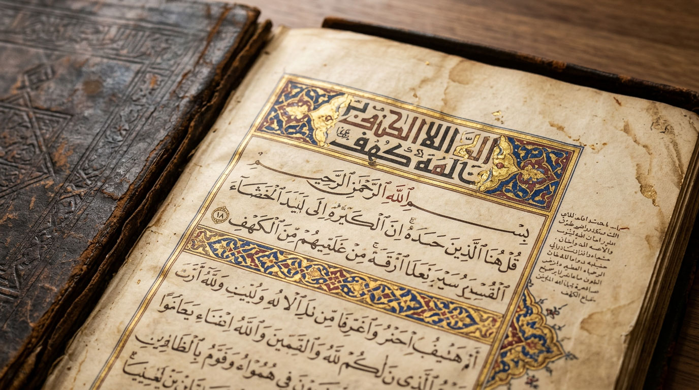

أثر
Al-Athar
Une empreinte gravée pour toujours.

LA RÈGLE
Écrite avant la maison
Personne ne quittera Dar al-Hiraf sans avoir laissé, dans les murs, une œuvre de sa main.
Non pas un objet que l'on emporte : un panneau de zellīj dans un couloir, une porte, une vasque, un plafond de plâtre, une grille de fer, une inscription au-dessus d'un seuil. Quelque chose qui reste, et qui ne se reprend pas.
Ce n'est pas une cérémonie ajoutée à la formation. C'est la formation arrivée à son terme. Le compagnon n'est pas celui qui sait faire : c'est celui dont l'œuvre a été reçue par son maître, puis posée dans la maison.
On écrit cette règle maintenant, avant qu'il y ait une maison, parce que la maison sera faite ainsi.

L'ŒUVRE DE RÉCEPTION
Ce qui est reçu, et ce qui ne l'est pas
L'œuvre est choisie avec le maître, dans le métier appris, et à la mesure de ce que l'homme sait vraiment faire — non de ce qu'il voudrait montrer. Elle doit être utile à la maison et destinée à une place précise : un mur, un seuil, une cour, un atelier.
Elle est ensuite jugée. Le maître peut la refuser : alors on recommence, et l'on peut ne pas finir. C'est ce refus possible qui donne à la réception son poids ; une épreuve que l'on est certain de réussir n'est pas une épreuve.
Fixe
L'œuvre est incorporée au bâtiment. Elle ne se vend pas, ne se déplace pas, ne se rend pas.
Utile
Elle sert à quelque chose : on marche dessus, on s'y appuie, on y puise, on la regarde chaque jour.
Reçue
Elle n'existe comme œuvre qu'au moment où le maître l'accepte et où la communauté la voit poser.
La logique est ancienne : c'est celle du chef-d'œuvre des compagnonnages, et celle de l'ijāza dans la tradition islamique du savoir, où l'on n'est pas autorisé à transmettre parce qu'on a appris, mais parce qu'un maître atteste qu'on a appris de lui.
إِنَّ اللهَ يُحِبُّ إِذَا عَمِلَ أَحَدُكُمْ عَمَلًا أَنْ يُتْقِنَهُ
« Dieu aime que, lorsque l'un de vous accomplit une œuvre, il l'accomplisse avec excellence. »
C'est ce ḥadīth que porte, brodé en coufique andalou au fil d'or, la ceinture du quatrième grade — le Ḥizām al-Itqān, celle du maître. La règle de l'œuvre de réception et le signe que l'on porte à la taille disent donc la même chose : Al-Kiswa →
Rapporté par Abū Yaʿlā et al-Ṭabarānī ; tenu pour authentique (ṣaḥīḥ) par al-Albānī dans al-Silsila al-Ṣaḥīḥa, sur la foi de témoins corroborants. Il ne figure pas dans les deux Ṣaḥīḥ de Bukhārī et de Muslim.
LES PREMIERS
La première œuvre sera la maison elle-même
Le Riad n'existe pas encore. Ceux qui viendront les premiers ne poseront donc pas une pièce dans un édifice achevé : ils relèveront l'édifice.
Les plâtres, les sols, les boiseries, les ferrures, les portes et l'eau de la maison seront leur travail d'apprentissage avant d'être leur chef-d'œuvre. La restauration n'est pas un chantier préalable à la formation : elle en est la première année.
C'est aussi ce qui distingue ce projet d'une restauration ordinaire. Un chantier confié à une entreprise produit un bâtiment ; un chantier confié à des apprentis sous la conduite de maîtres produit un bâtiment et des hommes.
Comment la maison se relève →AS-SIJILL
Le registre
À chaque œuvre posée correspond une ligne écrite : ce qui a été fait, par quelle main, sous quel maître, en quelle année. Le registre reste dans la maison. Il n'est pas publié, et aucun nom de résident ne figure sur ce site.
Au bout de vingt ans, le bâtiment et le registre disent la même chose de deux manières : une chaîne d'hommes, et ce qu'ils ont laissé. Celui qui revient à quarante ans peut montrer à son fils la porte qu'il a taillée à vingt-deux.
LA FORME DE LA LIGNE
- Œuvre
- Métier
- Main
- Maître
- Lieu
- Reçue le

UNE LIMITE CLAIRE
Ce qui ne sort pas de la maison
Les ateliers produisent aussi pour l'extérieur : des objets, des étoffes, des essences, du travail sur commande. Cette production est nécessaire — elle fait vivre la maison et éprouve le métier contre l'exigence d'un client réel.
L'œuvre de réception, elle, n'entre jamais dans ce circuit. Elle n'a pas de prix parce qu'elle n'a pas d'acheteur possible. C'est la seule chose que le Riad produise et qu'il ne puisse pas céder.
L'artisanat du Riad →LA DETTE
On ne sort pas quitte
Celui qui a reçu un métier en doit un. À la fin de la résidence, l'homme s'engage à enseigner à son tour ce qu'il a appris — à un autre au moins, dans les années qui suivent, où qu'il aille.
Cet engagement est inscrit au registre au même titre que l'œuvre, et le registre note aussi le jour où il est acquitté. Dar al-Hiraf ne forme pas des diplômés : elle forme des débiteurs d'une chaîne.
C'est là le sens le plus concret de la futuwwa : ce que l'on a reçu gratuitement n'est jamais à soi seul.
La futuwwa →AUJOURD'HUI
Le mur qui attend
Dans la maison à venir, un mur sera laissé nu et déclaré tel : réservé à la première œuvre reçue. Il ne sera ni peint, ni décoré, ni comblé en attendant.
C'est peu de chose, et c'est l'essentiel : la maison commencera par un vide qui a un destinataire.

مكان محفوظ
Réservé
Cet emplacement attend l'œuvre du premier compagnon reçu à Dar al-Hiraf.
Note sur le mot
Athar (أثر) est un mot arabe attesté : la trace, le vestige, ce qui demeure après le passage — et, dans le vocabulaire religieux, le rapport transmis d'une génération à l'autre. Les deux sens sont ici volontairement retenus. Son emploi comme nom d'une règle de maison est propre à ce projet et ne renvoie à aucune institution historique portant ce nom.